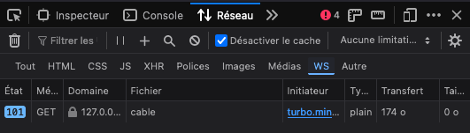
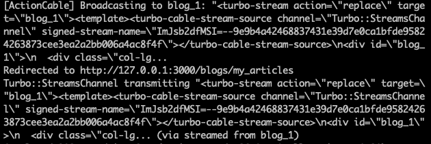

How Hotwire simplify real-time broadcasting in Rails

Table of Contents
- What is broadcasting?
- Broadcasting and WebSocket technology
- Implementing broadcasts with Hotwire
- How the magic of Hotwire works
- Conclusion
What is Broadcasting ?
In a web application, broadcasting refers to the ability to update visible data in real time for users. To illustrate this simply, let’s consider the example of an instant messaging service.
This example perfectly demonstrates the usefulness of broadcasting: it enables real-time exchanges between users without requiring them to refresh the page to see the updated data.
To understand how this is achieved, let’s dive into the underlying technology: WebSockets.
Broadcasting and WebSocket Technology
In a traditional client-server exchange, the client typically sends an HTTP request to the server following a user action, and the server responds with the necessary data.
WebSockets, on the other hand, establish a persistent connection that remains semi-open. This process begins with an initialization phase, known as the handshake, during which the client sends the necessary credentials to establish the communication channel.
Once the connection is established, it remains open, allowing the server to push updates to the client without requiring additional requests from the client.
Implementing Broadcasts with Hotwire
Hotwire significantly simplifies the code and setup needed for implementing broadcasts.
To illustrate this, here’s an example from a personal project, CasaVin, where I needed to create a real-time messaging system for blog users.
Step 1 : Configure an event listener in the model
In the relevant model, we add a callback to dynamically replace a target element with a partial after an update:
after_update_commit { broadcast_replace_to "blog_#{id}", partial: "your/partial/path", locals: { blog: self } }
Step 2 : Initialize the WebSocket and define the target
In the relevant view, activate the WebSocket using turbo_stream_from and specify the target element to be updated, such as an HTML container:
<%= turbo_stream_from blog %>
<div id=<%= dom_id(blog) %>">
...
</div>
Step 3 : Create a basic controller action
Finally, define an action in the controller to handle the update. Here’s an example:
# app/controllers/blogs_controller.rb
def update
@blog = Blog.find(params[:id])
# Logic for updating messages
unless @blog.update(messages: messages)
redirect_to blogs_path; alert: "Error during message submission"
end
end
And that’s it 🚀 ! The magic of Hotwire takes care of the rest.
How the magic of Hotwire works
Hotwire might seem magical at first glance, but let’s break down what’s actually happening.
- WebSocket Registration when the view is loaded, a WebSocket connection is opened and registered between the client (browser, tab) and the server. 
- Identifying the Target in the view, we specify which component Hotwire should update when an event triggers a change in the model.
- Updating via Turbo Stream when an update occurs on the object (via after_update_commit), the server sends a response in the form of a Turbo Stream through ActionCable. This response contains the necessary data to dynamically update the client’s DOM. 
Conclusion
Hotwire leverages ActionCable, the native Rails component for managing WebSockets. However, it eliminates the need to manually configure ActionCable, drastically reducing both complexity and the amount of code required.
Moreover, while traditional implementations require JavaScript to update the DOM with new data, Hotwire handles this seamlessly, providing an elegant and efficient solution for managing real-time updates.
I invite you to consult the Action Cable documentation for a better understanding of how to configure it in Rails without Hotwire.